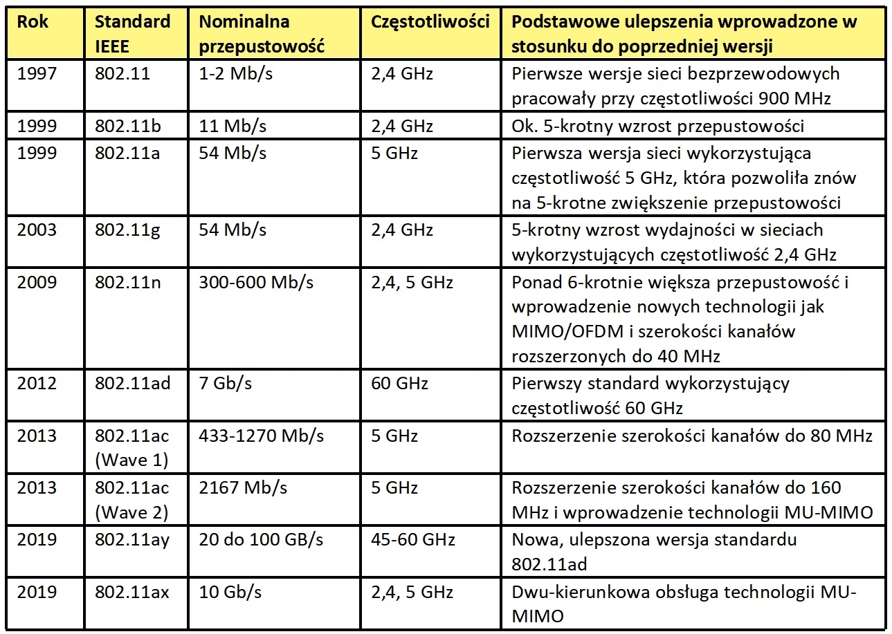

Wi-Fi to zestaw standardów stworzonych do budowy bezprzewodowych sieci komputerowych. Szczególnym zastosowaniem wi-fi jest budowanie sieci lokalnych (LAN) opartych na komunikacji radiowej, czyli WLAN. Zasięg od kilku metrów do kilku kilometrów i rzeczywistej przepustowości sięgającej 900 Mb/s, przy transmisji w standardzie 802.11ac na trzech kanałach o szerokości 80 MHz jednocześnie. Produkty zgodne z wi-fi mają na sobie odpowiednie logo, które świadczy o zdolności do współpracy z innymi produktami tego typu.
Wi-fi bazuje na takich protokołach warstwy fizycznej, jak:
DSSS (ang. Direct Sequence Spread Spectrum),
FHSS (ang. Frequency Hopping Spread Spectrum),
OFDM (ang. Orthogonal Frequency-Division Multiplexing).
Sieć wi-fi działa w paśmie częstotliwości od 2400 do 2485 MHz (2,4 GHz) lub 4915 do 5825 MHz (5 GHz).
Standardy sieci WiFi wraz z przepustowością;
